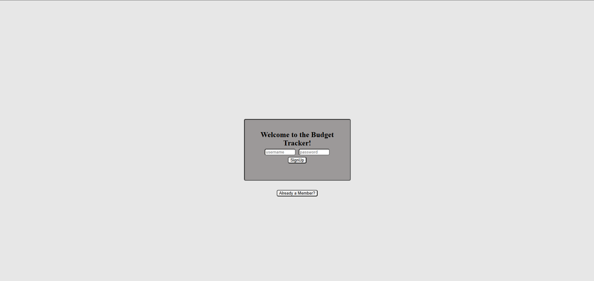
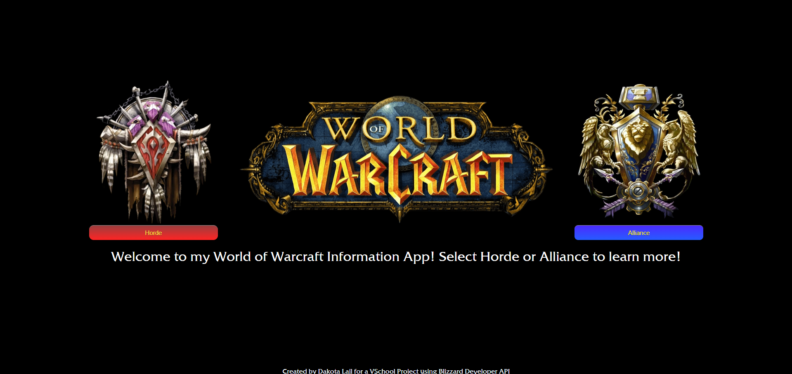

Examples Of My Work
One of my first full stack completed projects consists of a simple budget tracker. Utilizing MERN for the project and JWT and Bcrypt for authentication, this project captures multiple different aspects of basic website functions.
The Web App is simple to use, simply create a login on the authentication page, which will route you to the home page where you can fill out your deposits and withdrawals. Here you can add, edit, or delete your inputs and then will tally the totals on the bottom.
Check out the website here! Budget Tracker
– React – Express – Mongoose – MongoDB –Bcrypt –Json Web Token –Dotenv –CSS –Javascript
A personal favorite of mine, a Classic World of Warcraft Informational App. Very simple structure, the main page showcases the two main factions, Horde or Alliance. Select the option you would like to see more of to bring you to list of applicable races for each faction.
Once there, select the individual races and you can read a little more on the background as well as the specific classes each race can use. Showcasing React-Router-Dom specifically, move around with ease through each web page.
Check out the website here! Wow Info App
– React – Express – Mongoose – MongoDB –React-Router-Dom –Axios –CSS –Javascript